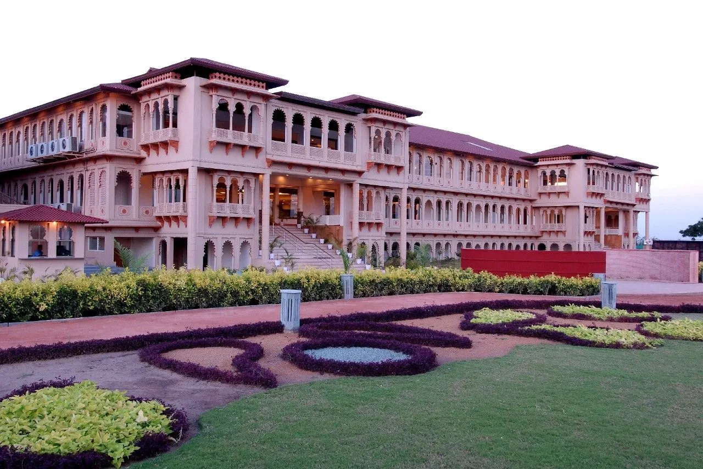
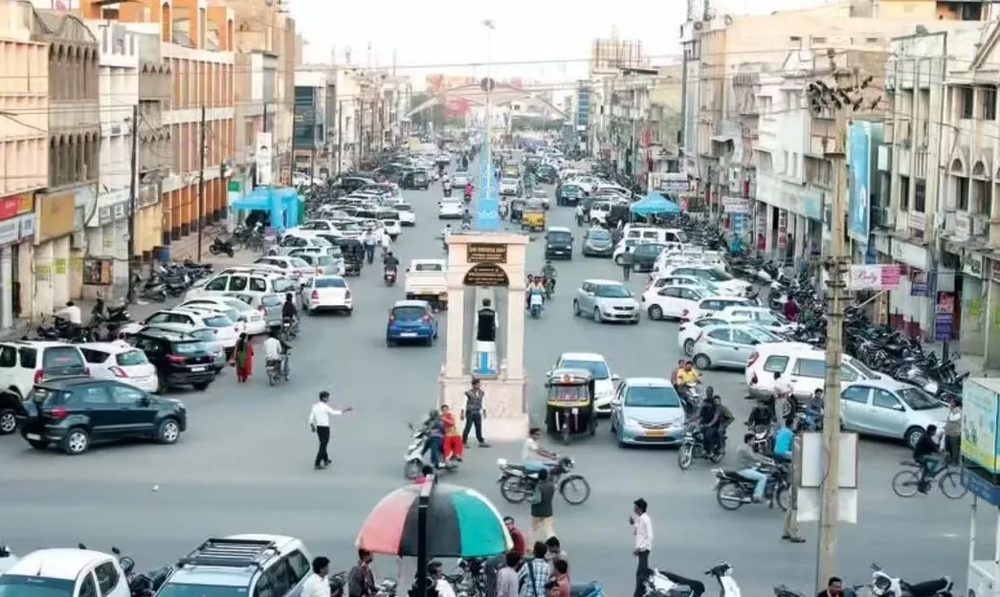
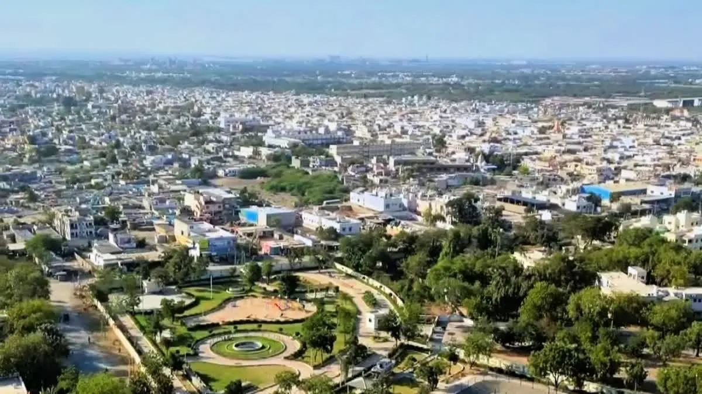
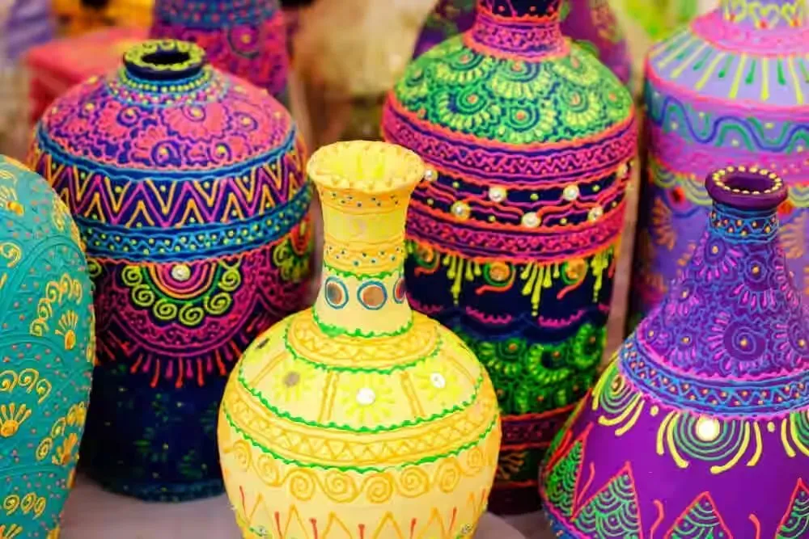
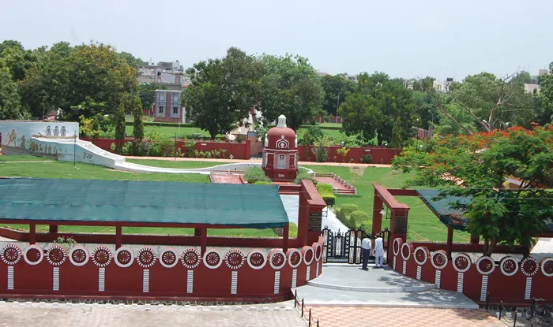

Gandhidham is Kutch's most cosmopolitan and modern city, master-planned in 1947 to resettle Sindhi refugees from Pakistan. Unlike the heritage-heavy Bhuj, Gandhidham is a bustling commercial engine, serving as the gateway to the massive Kandla Port. With wide avenues, modern malls, and a vibrant food scene, it offers a comfortable urban base or a perfect transit pause for travelers arriving by train.
Who Should Visit
- Business Travelers: The primary hub for trade and port-related business in Kutch.
- Shoppers: Excellent electronics and imported goods markets.
- Foodies: The best place to try authentic Sindhi cuisine (Dal Pakwan, Koki).
- Transit Travelers: Ideal stopover due to its major railway junction and airport.
How to Reach
- By Train (Best Option): Gandhidham Junction (GIMB) is the busiest railhead in Kutch, with direct trains from Mumbai, Delhi, and Bangalore.
- By Air: Kandla Airport (IXY) (6km away) has daily flights to Mumbai and Ahmedabad.
- By Road: 55km east of Bhuj (1 Hour). Connected by excellent 4-lane highways.
- Local Transport: Auto-rickshaws and taxis are plentiful. App-based cabs might be limited.
Landmarks & Heritage
The defining monuments

Gandhi Samadhi (Adipur)
(45 Mins) A serene memorial containing some of Mahatma Gandhi's ashes. Visit in the morning/evening.
Sindhi Food Trail
(1-2 hours) Visit Green Palace or local stalls for 'Dal Pakwan' breakfast.
Kandla Port View
(Drive-by) You cannot enter without a permit, but driving past offers a glimpse of massive ships and industry.
Shopping at Banking Circle
(Evening) Browse electronics, clothes, and imported items.
Curated Local Advice
Not a 'Tourist' City
Don't expect palaces or forts here. Come for the food and shopping.
Stay
Hotels here are generally newer and offer better modern amenities than Bhuj.
Climate
It is humid due to the nearby creek/sea. Summers are sweaty.
Suggested Itinerary
00 AM: Breakfast of Dal Pakwan at a local Sindhi eatery.
30 AM: Visit Gandhi Samadhi in Adipur (Sister town).
00 PM: Shopping near Tagore Road/Banking Circle.
30 PM: Lunch and proceed to Bhuj or Anjar.
Shopping & Bazaars
- Banking Circle Market: The commercial heart of Gandhidham. Find electronics, imported goods, clothing, and accessories. Modern shops with fixed prices. Best time: 10 AM - 9 PM.
- Tagore Road Shopping: Main shopping street with branded stores, footwear shops, and textile outlets. Good for clothing and modern fashion items.
- Sindhi Market: Traditional market selling Sindhi handicrafts, embroidered items, and local textiles. Bargaining expected. Morning hours best.
- Electronics Market: Specialized area for computers, mobile phones, and electronic goods. Competitive prices due to port proximity.
- Adipur Market: Sister town market 8km away. Good for daily essentials, local snacks, and traditional items at lower prices.
- Modern Malls: Small shopping centers with branded stores, food courts, and entertainment options. Air-conditioned comfort shopping.
Local Eats
- Sindhi Heritage: Founded by Bhai Pratap for Partition refugees. The culture is distinctly Sindhi.
- Must Eats: Dal Pakwan (Breakfast), Koki (Spiced flatbread), and Gheeyar (Holi special sweet).
- Language: You'll hear more Sindhi and Hindi here than anywhere else in Kutch.
When to Visit
October to March: Pleasant weather. Good for shopping and food walks.
April to June: Humid and hot. Not recommended for walking around.
Nearby Places to Visit
Location & Gallery




